| |
|
RASTER GÖRÜNTÜLER
|
Genel Bilgiler
Görüntü Yükleme Görüntü Ağacı veya Kataloğu Kotlu ASCII-Grid ve GeoTIFF Görüntüleri Filtreler ve Gölgelendirme Görüntülerin Dönüştürülmesi ve Kaydedilmesi Görüntülerin Düzenlenmesi Görüntü Özellikleri Görüntü Düzenleme, Ayarlar ve Yakınlaştırma Kırpma Alanları Uzak Sunuculardan Görüntü Alma WMS Servisleri
Yardımcı AraçlarWFS Servisi Google Servisleri Bing ve OpenStreetMap Servisleri SRTM Dosyalarını İndirme Genel Bilgiler ISTRAM®/ISPOL®, coğrafi referanslı olsun ya da olmasın ve her boyutta, mevcut formatların çoğundaki görüntüleri yüklemeye izin verir. Görüntüler, görüntülerin coğrafi konumlandırılması veya raster görüntüler içeren paftaların kompozisyonu için bireysel olarak konumlandırılabilir ve işlenebilir ve hem fiziksel olarak hem de PostScript, PDF, DWG/DXF,... dillerinde yazdırılabilir.
Programın okuyabildiği formatlar arasında şunlar bulunmaktadır:
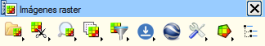Görüntülerin genel yönetimi, düzenlenmesi de dahil olmak üzere, standart araç çubuğundaki  simgesiyle veya Ayarlar → Araç Çubuklarını Göster → Raster Görüntüler menüsünden açılabilen
görüntü araç çubuğundan yapılır. simgesiyle veya Ayarlar → Araç Çubuklarını Göster → Raster Görüntüler menüsünden açılabilen
görüntü araç çubuğundan yapılır.Bu araç çubuğu aşağıdaki simgelerden oluşur:
Görüntü Yükleme Görüntü yüklemenin birkaç yolu vardır:
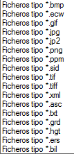
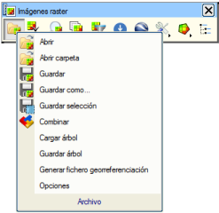İlk üç yolla, program kullanıcıdan yüklenecek görüntüyü ister ve eğer bu görüntü coğrafi referanslı değilse, görüntünün sol alt köşesine göreli ekleme noktasını da ister. Eğer yüklenecek görüntü coğrafi referanslı ve zaten yüklenmişse, bir uyarı mesajı gösterilir. Ayrıca, yüklenecek görüntünün, EDM ile ilişkilendirilmiş olandan farklı bir CRS'ye (koordinat referans sistemi) sahip olması durumunda da bir uyarı gösterilir, böylece kullanıcı ilgili dönüşümü yapma veya bu dönüşümü yok sayma arasında seçim yapabilir. Bir dönüşüm yapmayı seçme durumunda, dönüşüm türünü ve hatta NTV2 formatında bir grid dosyasını belirtmek mümkündür. 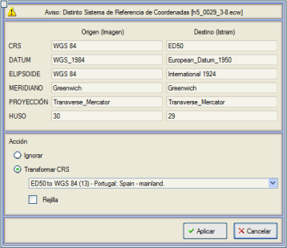
Eğer EDM boşsa ve yüklenecek görüntünün bir CRS'si varsa, o zaman bu CRS mevcut olarak ayarlanır. Görüntü yüklendikten sonra, seçili veya aktif hale gelir, görüntünün köşelerinde tutma noktaları ve kenarı camgöbeği renginde gösterilir. Bu kenar, seçili olmayan görüntüler için gri renkte gösterilir. Yardımcı Araçlar  menüsünde, bu görüntü kenarlarının görüntülenip görüntülenmeyeceğini belirlemeyi sağlayan Kenarları Göster/Gizle seçeneği bulunur. menüsünde, bu görüntü kenarlarının görüntülenip görüntülenmeyeceğini belirlemeyi sağlayan Kenarları Göster/Gizle seçeneği bulunur.En az bir görüntü yüklendiğinde, programın bağlam menüsü, görüntülerle yapılabilecek farklı işlemlere uyum sağlar. Bir görüntüyü seçmek için, üzerine tıklamak veya daha sonra açıklanacak olan görüntü ağacından seçmek yeterlidir. Eğer birden fazla görüntü yüklenmişse, Dosya  açılır menüsündeki Birleştir seçeneği çok kullanışlı olabilir, çünkü tüm bu görüntüleri tek bir görüntüde birleştirmeyi sağlar. açılır menüsündeki Birleştir seçeneği çok kullanışlı olabilir, çünkü tüm bu görüntüleri tek bir görüntüde birleştirmeyi sağlar.Program yeni bir görüntü yüklediğinde, hemen proje klasöründe, aynı adla ancak .ovr uzantısıyla bir kopyasını oluşturur. Bu format, gelecekteki çalışma oturumlarında yüklemeyi ve görüntülerin işlenmesini önemli ölçüde hızlandırır. 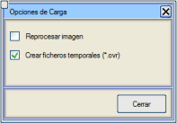 Ancak, bu davranışın istenmeyen bir yan etkisi olabilir. Örneğin, daha önce yüklenmiş bir başkasıyla aynı ada sahip yeni bir görüntü yüklemek istenirse, program ikincisiyle çakışacak olan .ovr dosyasını yükleyecektir ve dolayısıyla beklenen yükleme gerçekleşmeyecektir. Bu davranışı önlemek için, Dosya simgesine tıklandığında açılan menüden Seçenekler'den Görüntüyü yeniden işle seçeneğini etkinleştirmek gerekecektir. Aynı iletişim kutusunda, .ovr dosyalarının oluşturulmasını önleme imkanı da sunulur.Görüntü Ağacı veya Kataloğu 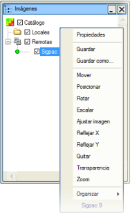Görüntü ağacı, görüntü araç çubuğundaki  düğmesi aracılığıyla açılır ve görüntüleri yerel (bilgisayardan veya yerel çalışma ağından erişilebilir) ve uzak (WMS veya Google sunucularından gelen) olarak sınıflandırır. düğmesi aracılığıyla açılır ve görüntüleri yerel (bilgisayardan veya yerel çalışma ağından erişilebilir) ve uzak (WMS veya Google sunucularından gelen) olarak sınıflandırır.Yüklenen görüntülerin daha iyi yönetimi için, görüntü ağacının Yerel düğümü içinde kullanıcı klasörleri oluşturulmasına izin verilir. Bunun için, Yerel düğümüne sağ fare tuşuyla tıklandığında, adını değiştirebileceğimiz yeni bir klasör oluşturma seçeneği sunulacaktır. Bir görüntü yüklendiğinde, seçili olan klasör düğümüne dahil edilecektir. Ağaçtaki görüntülerden birine farenin ikincil düğmesiyle basılırsa, görüntülerin yönetimi ve düzenlenmesiyle ilgili seçeneklere uyarlanmış bağlam menüsü de açılır. Bir görüntüyü ağaçtan (ve dolayısıyla projeden) silmek için, bu menüden Kaldır seçeneğini seçmek veya fareyle görüntüyü seçip klavyedeki <Del> tuşuna basmak yeterlidir. Ağaçtaki her görüntü, etkinleştirilmesine veya devre dışı bırakılmasına olanak tanıyan bir onay kutusuyla birlikte gösterilir. Devre dışı bırakılmış bir görüntünün sadece kenarlığı ve adı gösterilir. Bu, çok sayıda ve/veya büyük boyutlu görüntüye sahip olunması durumunda harita üzerinde gezinmeyi önemli ölçüde hızlandırır. Görüntü ağacındaki görüntünün adını değiştirmek de mümkündür (bu ad değişikliği sadece ağacı etkiler, görüntü dosyasının adını etkilemez). Raster görüntü seti konumlandırıldıktan sonra, projeyle ilişkilendirilen ağacı kaydetmek mümkündür, böylece sadece ağacı yükleyerek, ona bağlı tüm görüntüler de yüklenir (Dosya simgesine tıklandığında gösterilen açılır menüden Ağacı Kaydet seçeneği).
Kotlu ASCII-Grid ve GeoTIFF Görüntüleri Bu tür görüntüler, özelliklerinden dolayı özel bir değerlendirmeyi hak eder. Bir yandan, ASCII-Grid formatı, ISTRAM®/ISPOL® tarafından TOPOGRAFYA'dan bir nokta bulutu olarak okunabilir, YÜZEY MODELLEME modülünden oluşturulabilir vb., ancak aynı zamanda kotlu bir görüntü olarak da işlenebilir. Öte yandan, GeoTIFF formatı ( .tif coğrafi referanslı dosyalar), görüntünün kendisine ek olarak, her pikseline bir kot değeri atanmış bir varyanta sahiptir, bu da onu gerçek bir 3B görüntü haline getirir. Her iki durumda da, diğer formatlarla yapılan değerlendirmelere ek olarak, şunlar dikkate alınmalıdır:
Filtreler ve Gölgelendirme 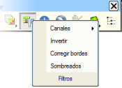Filtreler  menüsü altında, düzeltmeler uygulamak veya görünümünü değiştirmek için bir
görüntüde değişiklik yapmayı sağlayan bir dizi seçenek toplanmıştır.
menüsü altında, düzeltmeler uygulamak veya görünümünü değiştirmek için bir
görüntüde değişiklik yapmayı sağlayan bir dizi seçenek toplanmıştır.Kanallar açılır menüsü altında, görüntünün 3 renk bileşeninden her birini etkinleştirmek veya devre dışı bırakmak mümkündür: kırmızı (R), yeşil (G) ve mavi (B). Ters Çevir seçeneği, görüntünün renk bileşenlerini tersine çevirerek değiştirir. Kenarları Düzelt seçeneği, kullanıcı tarafından tanımlanan beyaz/siyah veya başka herhangi bir renkteki görüntü kenarlıklarını, geri kalan iç pikselleri etkilemeden kaldırmayı sağlar. Bu, şeffaflık özelliğine benzer bir seçenektir, ancak yalnızca görüntünün kenarlıklarını etkiler. 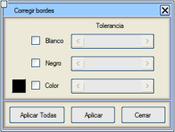
Renkler ve Gölgelendirme 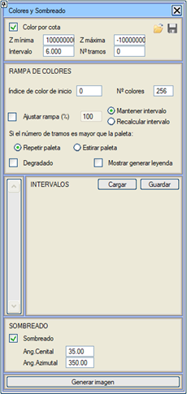Filtreler menüsünü açtığınızda gösterilen seçenekler arasında Gölgelendirme seçeneği bulunur.
Bu seçenek, sayısal arazi modeli formatındaki (kot bilgisi) görüntülerin gölgelendirmesini etkinleştirmeyi/devre dışı bırakmayı ve bu kot bilgisini temsil etmek için farklı renkler seçmeyi, hatta
gölgelendirme filtresini uygulamanın sonucunda ortaya çıkan görüntüyü bir dosyaya oluşturma imkanı sunar, .tif formatında. İletişim kutusunun kota göre renk açısından sunduğu seçenekler şunlardır:
Rampayı Ayarla (%) seçeneği,
renk gradyanını ayarlamayı sağlar, öyle ki %100,
rampadaki tüm renklerin kullanılmasını sağlar. Örneğin, renk rampası
350'den 361'e kadar olan renk indekslerini içeriyorsa, %50'lik bir ayar
352, 354,... indekslerinin kullanılmasını sağlar, %25 ise 350, 354,...
indekslerini kullanır ve
böyle devam eder.
Renk rampasında bir değişiklik şu seçeneklerden birini gerektirir:
Gölgelendirme seçeneğiyle ilgili olarak, bu seçenek kotlu görüntülerin gölgelendirmesini, belirtilen zenit ve azimut açılarıyla gelen bir ışığa göre etkinleştirir:
Bu menünün seçeneklerini Yükleme/Kaydetme imkanı. Görüntülerin Dönüştürülmesi ve Kaydedilmesi 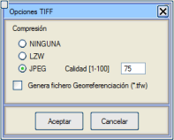Seçilen görüntüler başka bir formatta kaydedilebilir. Bağlam menüsünden veya Dosya açılır menüsünden Farklı Kaydet… seçeneğini seçmek ve hedef formatı ile kaydedilecek dosya adını seçmek yeterlidir.Genellikle, kullanıcının sadece hedef görüntünün kalitesini, coğrafi referans dosyasının oluşturulup oluşturulmayacağını ve hedef formata bağlı olarak, onunla ilgili bir konuyu belirtmesi gereken küçük bir iletişim kutusu belirir. Bir şeffaflık katmanına (alfa kanalı) sahip bir görüntüyü, bu katmana izin vermeyen bir formata (JPEG gibi) kaydetmeye çalışırken, bu işlemin yapılamayacağını belirtmek için kullanıcıya bir uyarı gösterilir.  Seçimi Kaydet seçeneği, Dosya açılır menüsünden de erişilebilir ve ekranda seçilen görüntü parçasını kaydetmeyi sağlar. Bu seçim, seçenek seçildikten sonra yapılır. Seçimi Kaydet seçeneği, Dosya açılır menüsünden de erişilebilir ve ekranda seçilen görüntü parçasını kaydetmeyi sağlar. Bu seçim, seçenek seçildikten sonra yapılır.
Ayrıca, Dosya açılır menüsündeki Coğrafi Referans Dosyası Oluştur seçeneğini kullanarak, seçilen görüntülerin yalnızca coğrafi referans dosyalarını (.jpw, .tfw, vb.) oluşturmak da mümkündür.Herhangi bir RGB görüntüsünü, Farklı Kaydet... seçeneği ile ASC formatına dönüştürmek mümkündür. Görüntünün RGB bileşenlerine bağlı olarak bir kot değeri hesaplanacak olan minimum ve maksimum kot değeri istenecektir. Görüntülerin Düzenlenmesi Eğer iki veya daha fazla görüntü tamamen veya kısmen üst üste biniyorsa, hangi sırada olduklarını belirtmek gerekir. 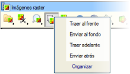Varsayılan olarak, bu sıra yükleme sırasıdır ve eğer değiştirilmek istenirse, hem Sırala  seçeneğinden hem de bağlam menüsünden erişilebilen aşağıdaki seçenekleri kullanmak gerekecektir: seçeneğinden hem de bağlam menüsünden erişilebilen aşağıdaki seçenekleri kullanmak gerekecektir:
Görüntü Özellikleri Bir görüntünün özelliklerini göstermek için, sağ tuşa basıp bağlam menüsünden Özellikler seçeneğini seçmek yeterlidir. Bu, görüntünün özelliklerini içeren bir pencere gösterecektir: format, genişlik ve yükseklik, koordinat başlangıcı, ölçek,... Opaklık seçeneği, üst üste binen birden fazla görüntüyü görüntüleyebilmek için bir görüntüyle ilişkili katmanın sahip olacağı şeffaflık derecesini belirtmeyi sağlar. Gama seçeneği, bir görüntünün parlaklığını değiştirmeyi sağlar. 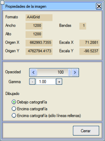
Bu pencereden ayrıca, görüntünün haritanın altına mı, haritanın üstüne mi yoksa dolgulu çizgilerin üstüne ama haritanın geri kalanının altına mı çizileceğini belirtmek de mümkündür. Görüntü Düzenleme, Ayarlar ve Yakınlaştırma 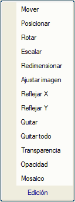ISTRAM®/ISPOL®'ün görüntüleri düzenlerken sunduğu olanaklar, hem farenin ikincil düğmesinin açtığı bağlam menüsünden hem de Düzenle  açılır menüsünden erişilebilen aşağıdaki işlemlerdir: açılır menüsünden erişilebilen aşağıdaki işlemlerdir:
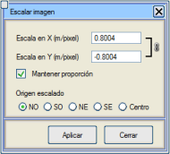
Bu değerler, programın mevcut ölçek faktörünü otomatik olarak dikkate alır. Eğer Oranı koru seçeneği işaretlenirse,
genişlik veya yükseklik değeri değiştirildiğinde, diğer değer
en-boy oranının veya oranın korunacağı şekilde otomatik olarak
hesaplanır.
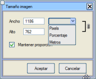
Yöntem,
biri görüntüden diğeri haritadan olmak üzere nokta çiftlerini işaretlemekten ibarettir.
Bunun ardından, raster görüntünün sağlanan noktalarının
vektör bilgi noktaları üzerine konumlandırılması için gerekli öteleme,
döndürme ve ölçekleme işlemleri otomatik olarak gerçekleştirilecektir.
Raster görüntüler için parlaklık, kontrast, gama, HSL (ton, doygunluk, aydınlık) ayarları eklenir, ayrıca konvolüsyon filtreleri (gauss, kabartma, keskinleştirme, kenarlar,...) de eklenir.
Kutucuğa tıklandığında açılan ölçekten herhangi bir renk uygulanabilir, varsayılan olarak siyahtır.
Ayrıca, birbirine çok yakın renklerin de şeffaf olması için bir tolerans belirtmek de mümkündür.

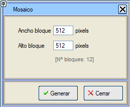 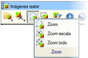Yakınlaştırma açılır menüsünden de erişilebilen ekran boyutu ayarlarına gelince, programın sunduğu olanaklar şunlardır:
Kırpma Alanları  Kırpma Alanları Kırpma Alanları  seçeneği içinde Kaydet ve Sil komutları bulunabilir. seçeneği içinde Kaydet ve Sil komutları bulunabilir.İlkiyle, önceden oluşturulmuş kapalı bir çoklu doğrudan bir alan oluşturulabilir ve sadece bu alanın içindeki görüntü korunur. Sil komutu, silinmek istenen bir veya daha fazla alanı silmeyi sağlar, bu değişiklikle görüntünün kullanıcı onayıyla otomatik olarak kaydedileceğini unutmayın. Bu nedenle, nihai sonuç beklenildiği gibi olmazsa diye görüntünün bir yedeğini almakta fayda vardır. Uzak Sunuculardan Görüntü Alma WMS Servisleri 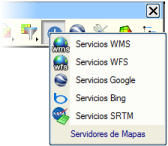 WMS (Web Harita Servisi) hizmeti, coğrafi bilgilerden dinamik olarak coğrafi referanslı veri haritaları oluşturmak için OGC (Açık Coğrafi Konsorsiyum) tarafından tanımlanmış uluslararası bir standarttır. WMS tarafından üretilen haritalar genellikle .png, .gif veya .jpg gibi bir raster görüntü formatında oluşturulur. Bu hizmeti sunan çok sayıda sunucu bulunmaktadır, bu nedenle kullanıcının internet üzerinden sunucu listelerini araştırması önerilir. ISTRAM®/ISPOL® ayrıca coğrafi referanslı görüntüler elde etmek için WMS harita sunucularına bağlantı imkanı da sunar. Bunun için, indirilecek haritanın koordinatlarını sağlayan bir .edm/.edb dosyası yüklenmiş olmalıdır. Harita yüklendikten sonra, WMS Servisleri seçeneğine (görüntü araç çubuğundaki  simgesi) gidilmeli ve iletişim kutusunda bağlantı kurulmak istenen sunucu seçilmelidir.
simgesi) gidilmeli ve iletişim kutusunda bağlantı kurulmak istenen sunucu seçilmelidir.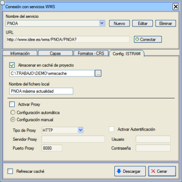Bir proxy üzerinden WMS sunucularına bağlanmak mümkündür. WMS servisleriyle bağlantı penceresinde, ISTRAM Yapılandırması sekmesi içinde, bağlantı parametreleri otomatik veya manuel olarak ayarlanabilir (proxy türü, sunucu, port, kullanıcı, şifre,…). Aynı sekmede, gelecekteki oturumlarda aynı görüntü talep edilirse, yüklemesinin anında ve herhangi bir bağlantı kurmaya gerek kalmadan yapılması için bir klasörün önbellek olarak kullanılıp kullanılmayacağı da belirtilebilir. Yerel dosya adı, bir görüntü indirildikten sonra oluşturulan ve onun hakkında bilgi içeren .xml dosyasına referans verir. Böylece, bir görüntü yüklenirken/eklenirken bu dosya sağlanırsa, program kullanıcının bağlantıyı zorlamasına gerek kalmadan onu otomatik olarak indirir. Bu dosya, proje dizinindeki \tmp klasörüne kaydedilir. Bilgi sekmesinden, program varsayılan olarak bir dizi hizmet sunar. Kullanıcı, bu hizmetleri listeye yeni sunucular ekleyerek genişletebilir, ayrıca artık kullanışlı olmayan diğerlerini silebilir. Örneğin, http://www.idee.es sitesinden, Hizmetler Dizini bölümü altında, [Yeni] seçeneği ile bir tanımlayıcı ad ve ilgili URL'ye göre eklenebilecek onlarca WMS hizmeti belirtilir: 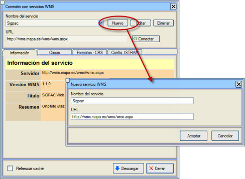
Servis seçildikten sonra, programın seçilen sunucuyla bağlantı kurması için [Bağlan] düğmesine basmak yeterlidir. Bağlantı başarıyla kurulursa, seçilen servis hakkında bilgi gösterilir. Örneğin, seçilen sunucunun PNOA olduğunu varsayalım. Bağlantı kurulduktan sonra, resimde gösterilen bilgiler belirir. 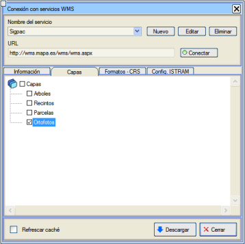Katmanlar sekmesinden, mevcut katmanlar arasından indirilmek istenenler seçilebilir. Örnekte, PNOA ortofotolarına karşılık gelen katman seçilmiştir.
Daha önce açıklandığı gibi, program indirilen her görüntünün bir kopyasını önbellek olarak oluşturur, böylece gelecekteki oturumlarda tekrar indirilmesi istendiğinde, işlemi hızlandırmak için doğrudan bu önbellekten yüklenir. Eğer kullanıcı yine de sunucudan yeniden indirmek ve bu yerel kopyayı yok saymak isterse, o zaman Önbelleği Yenile kutucuğunu işaretlemek gerekecektir. 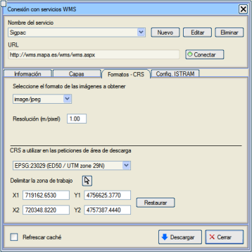Formatlar-CRS sekmesinde, sunucuya istekte bulunmak için kullanılacak SRS/CRS'nin yanı sıra, elde edilmek istenen görüntünün metre/piksel cinsinden çözünürlüğü de dikkate alınmalıdır. Projenin kapsadığı tüm alanı indirmek yerine, bir WMS görüntüsünün belirli bir indirme alanını belirtmek mümkündür. Bunun için, çalışma alanını sınırlayan (X1,Y1) ve (X2,Y2) koordinatlarını belirtmek yeterlidir. Bu koordinatlar,  düğmesine basıldıktan sonra grafiksel olarak verilebilir. düğmesine basıldıktan sonra grafiksel olarak verilebilir.Son olarak, [İndir] düğmesine basılacaktır, böylece sunucudan harita isteme süreci başlayacaktır. Görüntünün indirme durumu, görüntü ağacındaki görüntü simgesinin solundaki renkli bir daire ile gösterilir. Eğer daire sarı ise, görüntünün indirildiğini gösterir. Yeşil olduğunda, görüntünün zaten indirildiğini ve kırmızı ise, indirmede bir hata olduğunu gösterir. İndirme işlemi sırasında bir uzak görüntüyü silmek ve böylece bu işlemi iptal etmek mümkündür. Bundan sonra WMS Servisleri penceresini kapatmak mümkündür ve WMS sunucusuna bağlı olarak bir süre sonra, istenen görüntü ekranda belirecektir. Ayrıca, o görüntüye kaynak sunucunun adıyla ilişkili bir ad verilecektir. Örnekte, 29. dilimde çalışıldığı için CRS olarak EPSG-23029 kullanılmıştır: 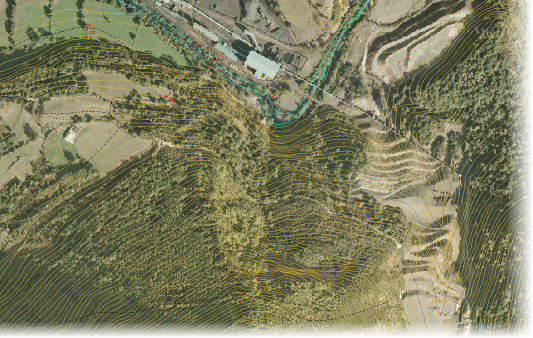
WFS Servisi Web Feature Service veya WFS, WMS standardı tarafından sunulan haritalarla etkileşime girmeyi sağlayan Open Geospatial Consortium (OGC) tarafından belirlenmiş standart bir hizmettir. ISTRAM®/ISPOL®, WMS Servisleri alt menüsü aracılığıyla WFS sunucularından vektör bilgisi indirme seçeneği sunar.Bu menünün işleyişi, genel WMS servisleri durumuna benzer: 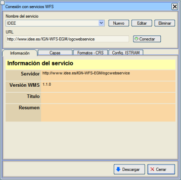
Google Servisleri 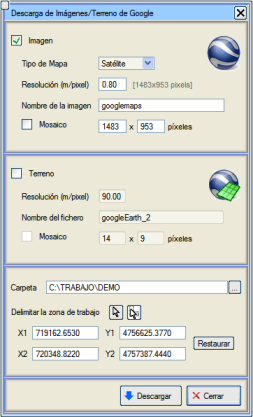 Google Servisleri  açılır menüsünden, hem Google Maps'ten raster görüntüleri hem de Google Earth®'ten kotlu görüntüleri doğrudan ISTRAM®/ISPOL®'den indirmek mümkündür. açılır menüsünden, hem Google Maps'ten raster görüntüleri hem de Google Earth®'ten kotlu görüntüleri doğrudan ISTRAM®/ISPOL®'den indirmek mümkündür.
İletişim kutusunun alt kısmında, görüntülerin kaydedileceği klasör ve görüntünün alanı belirtilebilir. Bu, sol alt ve sağ üst köşenin koordinatlarını belirterek veya düğmesine basarak grafiksel olarak yapılabilir. ya da EDM'de düğmesi aracılığıyla bir kapalı alan seçerek.Hem görüntüler hem de arazi, mozaik kutucuğu etkinleştirilerek bloklar halinde indirilebilir. Bloklar halinde indirme, geniş alanları indirirken çok kullanışlıdır, çünkü tek bir görüntü indirmek yerine, belirtilen boyutta bir görüntü mozaiği indirilir. Bu menünün en önemli parametresi, verdiğimiz Çözünürlük (m/piksel)'dir, çünkü bu değere bağlı olarak daha iyi bir görüntü veya arazi kalitesi elde ederiz. Ne kadar düşük çözünürlük (m/piksel) değeri verirsek, o kadar yüksek görüntü/arazi kalitesi elde edebiliriz. Google Maps® Eğer seçilen seçenek Görüntü ise, o zaman Google Maps® hizmetine erişilir ve belirtilmesi gereken seçenekler, indirilecek harita türü (uydu, harita, hibrit veya kabartma), m/piksel cinsinden çözünürlük ve görüntü adı'dır. Sadece güzergah bölgesinde bir görüntü mozaiği oluşturmak için eksen güzergahı boyunca kapalı bir çizgi seçmek ilginç olabilir.
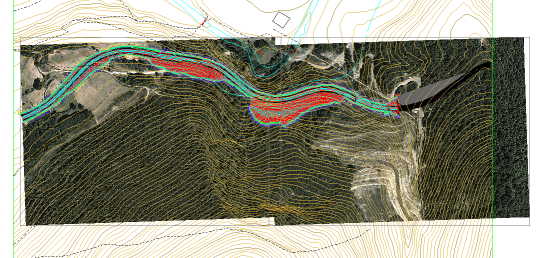
Bu, görüntü çalışma ağacında devre dışı bırakabileceğim iki görüntünün sonucudur.
Google Earth® Eğer Arazi seçilirse, o zaman Google Earth® hizmetine erişilir ve belirtilecek seçenekler Google Maps® hizmetindekilere benzerdir, tek farkla ki, bu durumda elde edilecek olan, kotlu bir görüntü dosyası olarak işlenebilen bir ASCII-Grid dosyası olacaktır.
Bing ve OpenStreetMap Servisleri Bu araçlarla Bing Maps veya OpenStreetMap'ten raster görüntüler indirebiliriz. Görüntü indirme prosedürü, daha önce bahsedilen Google Maps ile aynıdır. SRTM Dosyalarını İndirme Bu seçenek , SRTM (Shuttle Radar Topography Mission) dosyalarını kot bilgisiyle birlikte ASCII-Grid formatında indirmemizi sağlar. 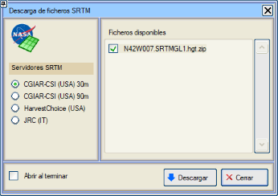
SRTM dosyaları bir .zip arşivinde sıkıştırılmış olarak gelir, bu nedenle yüklenmeden önce ya kullanıcının kendisi tarafından manuel olarak ya da otomatik olarak SRTM dosyalarını indirme iletişim kutusundaki Bitince aç seçeneğini işaretleyerek açılmalıdır. Asciigrid dosyalarını indirmek için sunduğumuz dört sunucudan birini seçebiliriz:
Yardımcı Araçlar 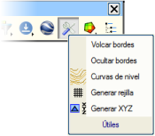Yardımcı Araçlar açılır menüsü altında, ilgi çekebilecek bazı yardımcı araçlar bir araya getirilmiştir:
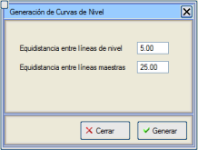
|